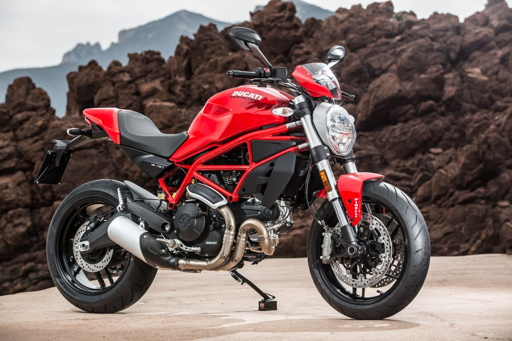
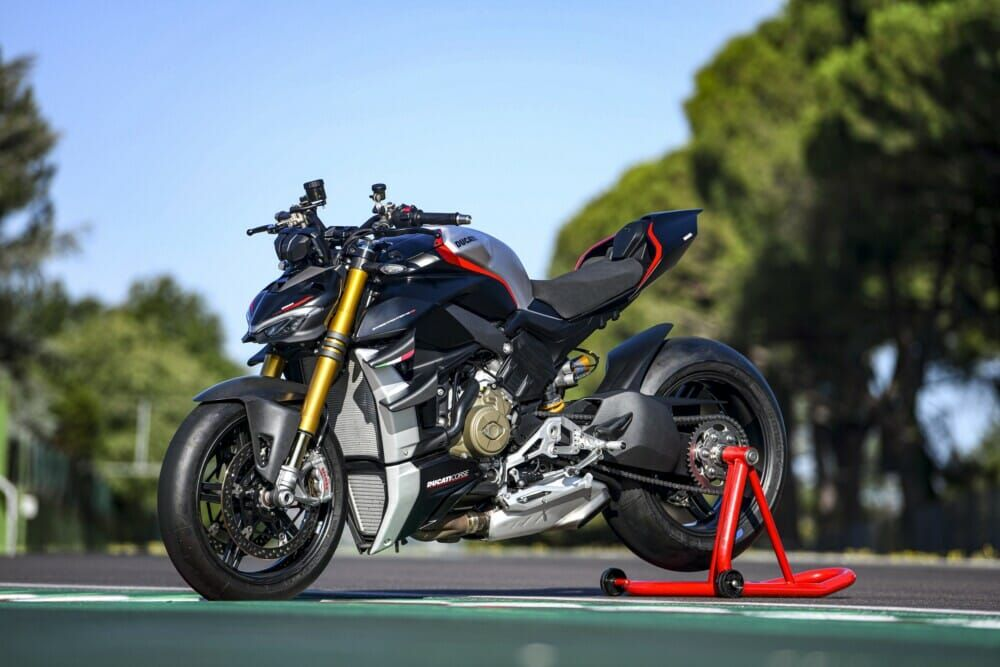
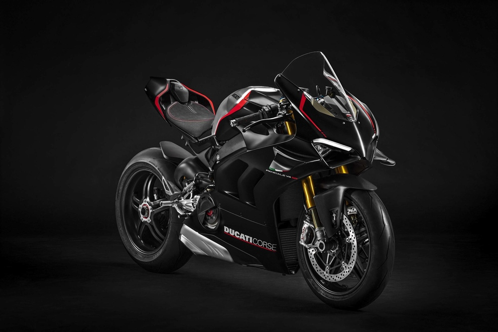
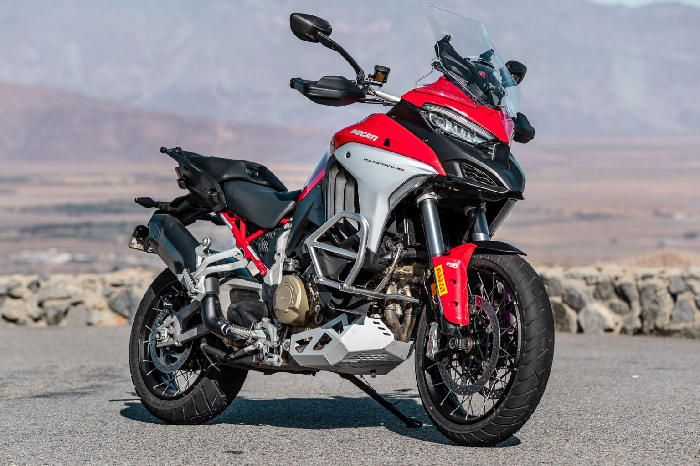
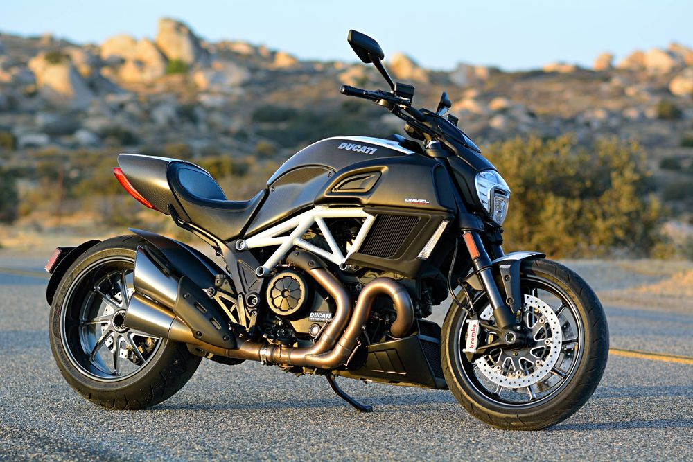
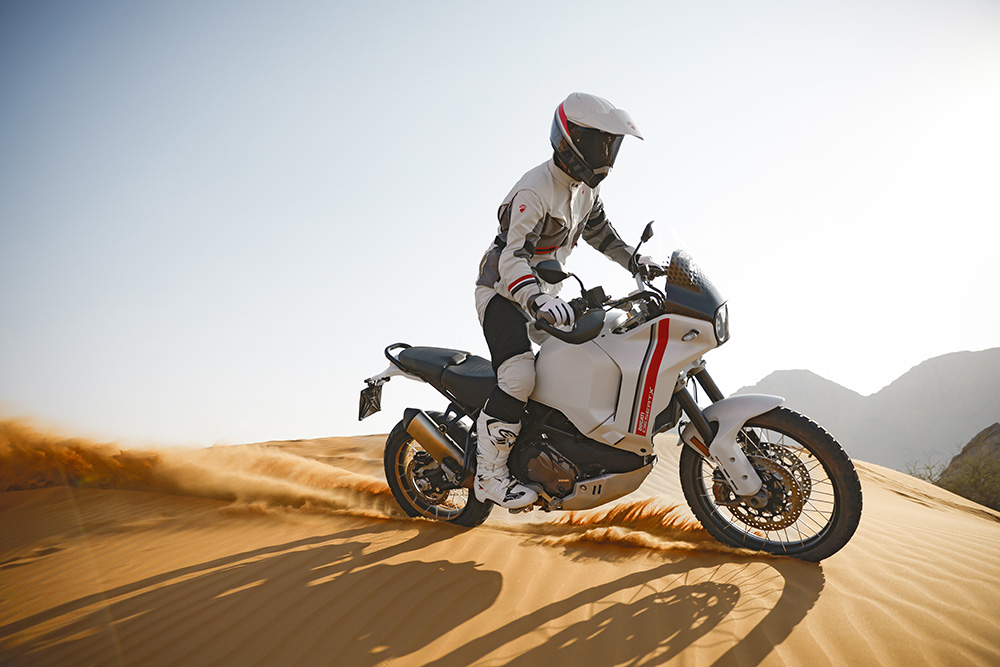

История компании DUCATI, которая сейчас известна во всем мире как производитель элитных мотоциклов, началась в 1926 году, в живописном итальянском городе Болонья. Братья Адриано, Бруно и Марчелло Дукати были увлечены радиотехникой и основали фирму по ее производству. В те годы правительство Италии было фашистским; для него было критически важно распространять пропагандистские материалы, радиоточка нужна была в каждом доме — таким образом, братьям Дукати был обеспечен огромный рынок сбыта. О росте и размахе производства можно судить по тому факту, что к 1939 году в цехах их завода в Болонье трудились 7 тысяч человек. торая мировая война внесла коррективы во многие сферы жизни, в том числе и в ассортимент выпускаемой продукции. В 40-е годы прошлого века заводы Дукати были переориентированы на нужные стране оптические прицелы и рации. Однако по окончании войны правительственные заказы иссякли, и это предприятие, как и многие другие, было национализировано итальянским правительством. Такие меры были необходимы, чтобы сохранить рабочие места тысячам занятых людей и перепрофилировать производство на то, что действительно пользовалось спросом. В другом итальянском городе, Турине, инженер компании «Сиата» Альдо Фаринелли занимался разработкой небольшого мотора для велосипедов. Он иронично назвал свое детище «Cucciolo», что в переводе с итальянского означает «щенок». Изобретатель точно почувствовал конъюнктуру рынка: жители стран, разоренных войной, остро нуждались в любых средствах передвижения. Фаринелли сумел серьезно усовершенствовать велосипеды. Силовой агрегат объемом 50 см³ и мощностью всего в 1 л. с. дополнялся двухступенчатой коробкой передач, которые переключались с помощью педалей. Одного литра низкосортного бензина с октановым числом 65 хватало на путь длиной в 100 км. Двигатель служил прекрасным помощником на подъемах дороги, что очень актуально для холмистой и гористой местности Италии. Спрос на «щенков» был настолько ажиотажным, что небольшая туринская фирма была неспособна его удовлетворить. И «Институт промышленной реконструкции» — государственная контора, в ведении которой было распределение заказов по национализированным предприятиям, — перепрофилировал бывший радиотехнический гигант DUCATI на производство веломоторчиков. Дела компании сразу пошли в гору. Вначале DUCATI просто копировала имеющийся прототип, однако в том же 1946 году представила свой первый оригинальный дизайн Т2, благодаря которому была повышена надежность и производительность веломоторчика. Теперь его мощь составляла 2 л. с., и он помогал развить максимальную скорость в 60 км/ч. В 1947 и 1948 годах ежедневно выпускалось по 240 «щенков». Италия, оправившись после войны, постепенно пересаживалась на мотороллеры и легкие мотоциклы, компания DUCATI поставляла большое колличество двухколесной техники, усовершенствуя свои технологии из года в год. В настоящее время сообщество DUCATI постоянно расширяется, распахивая двери для новых счастливчиков. Сеть клубов Desmo Owners в настоящее время насчитывает 250 подразделений на пяти континентах. Каждые два года десятки тысяч страстных поклонников бренда встречаются на Всемирной неделе DUCATI в Италии.
Модельный ряд мотоциклов достаточно большой, в данной статье представлены самые популярные модели в своих категориях:
Младший в семействе «монстров», Ducati Monster 797 является воплощением истинных ценностей итальянской марки мотоциклов.
Компактный, легкий, нo в тo жe время удивительно элегантный и динамичный, этот байк идеален для повседневной езды.

Streetfighter V2 — спортивный нейкед с уникальным характером. Байк, сочетающий в себе спортивные «гены» Panigale V2,
а также мировоззрение и стиль столь полюбившегося многим Streetfighter

Модель Panigale V4 представляет собой последний этап характерного для Ducati пути разработки спортивных мотоциклов
линейки Borgo Panigale. Улучшения затронули все области: аэродинамику, эргономику, двигатель, шасси и электронное оборудование.
В результате получился еще более быстрый и интуитивно понятный мотоцикл.

История Ducati Multistrada насчитывает около 20 лет. Первый мотоцикл этого семейства спустили со стапелей болонской фабрики
в 2001 году в виде прототипа, а в 2003 году они уже прочно обосновались в выставочных залах у дилеров. Все модели Ducati
Multistrada V4 ориентированы на водителя, что позволяет ощутить полный контроль и дарит удовольствие от езды.

Ducati Diavel — именно под таким устрашающим названием итальянская компания представила свое творение, вторгаясь на новые территории рынка круизеров.
Это всего второй круизер в истории компании. Чистокровным его трудно назвать, помимо комфорта, Diavel имеет выраженный спортивный нрав.
Мировой дебют Ducati Diavel состоялся в ноябре 2010 года на Миланском международном мотосалоне (EICMA).

Desert X — первый современный Ducati с 21-дюймовым передним колесом и 18-дюймовым задним, длинноходной подвеской и
новой рамой, разработанной специально для бездорожья. Это универсальный мотоцикл, адаптируемый к различным условиям: он был специально
разработан для самого непредсказуемого бездорожья, но он также безопасен и удобен для путешествий и повседневных поездок.

| МОДЕЛЬ | МОЩНОСТЬ | РАЗГОН ДО 100 КМ/Ч | СТОИМОСТЬ |
|---|---|---|---|
| Ducati Monster 797 | 75 л.с. | 3.5 с. | от 550 000 р. |
| Ducati Streetfighter V2 | 150 л.с. | 3.3 с. | от 2 350 000 р. |
| Ducati Panigale V4 | 214 л.с. | 3.1 с. | от 2 500 000 р. |
| Ducati Multistrada V4 | 170 л.с. | 3.4 с. | от 1 833 000 р. |
| Ducati Diavel | 162 л.с. | 3.0 с. | от 4 150 000 р. |
| Ducati Desert X | 108 л.с. | 12.0 с. | от 1 490 000 р. |